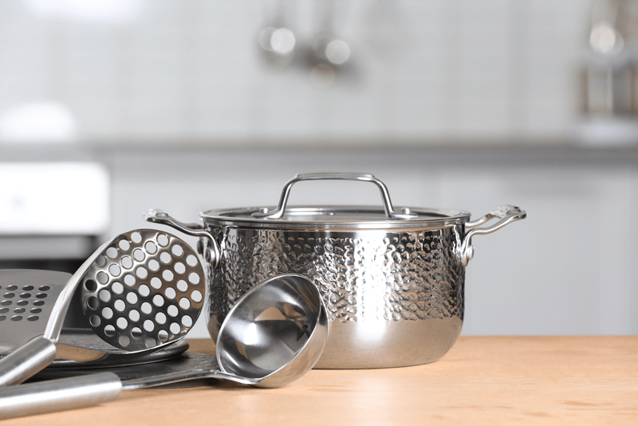
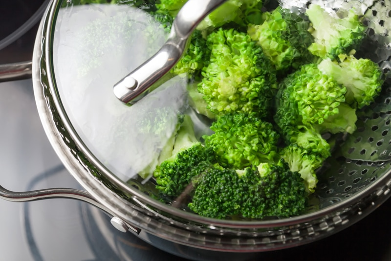

Roasting, Steaming, and Sautéing Without Oil
 After looking at some of my oil-free recipes, you may be asking yourself: Should I be cooking without oil too? What should a healthy diet look like? What foods should it include, or which ones should be avoided? Well, to be honest, that picture will look different for each of us.
After looking at some of my oil-free recipes, you may be asking yourself: Should I be cooking without oil too? What should a healthy diet look like? What foods should it include, or which ones should be avoided? Well, to be honest, that picture will look different for each of us.
We are all so uniquely made, and many factors come into play when it comes to feeding ourselves in order to achieve optimal health. I don’t know about you, but my food/health journey has shape-shifted throughout the years. I wasn’t always so in tune with my body. Thankfully it has honored the fact that I am a work in process.
The bottom line is whatever you choose to eat will have a profound effect on your overall health, either positive or negative. Throughout my site, I help to lay a healthy foundation, but you will need to see what foods benefit you the most. It’s not only what food you eat that matters but also how you prepare it.
Regardless of what a person’s daily food intake looks like, I think the primary foundation for EVERY diet is fresh fruits and vegetables (raw and cooked), moderate healthy fats, and low sugar (regardless of its form).
Fats come in different forms: whole foods and oil. A little bit of fat can improve the absorption of essential nutrients, but it’s always best to get it from unrefined, whole-food ingredients. So, for instance, try using avocado, nuts, or seeds in their whole form. Right now, I have cut all overt fats from my diet…always testing to see how my body responds to foods or their absence. A perk to testing such things allows me to learn a whole new subset of culinary skills. Let me share a little bit about what I have learned when it comes to cooking without oil.
Cookware Matters
Consider investing in some non-stick cookware. Though there is an initial cost, if taken care of properly, it will last a long time. Some good-quality options are heavy-bottomed stainless-steel pans, enamel-coated cast iron, or ceramic titanium pans. Using kitchen tools that are of high quality will save you time, frustration, and money in the long run. Who here hasn’t thrown away a pan full of burnt, sticky food?
- Be sure to hand-wash, so the coating doesn’t wear off prematurely. Do not use scouring pads.
- When stacking non-stick surface pans, I like to place a dishtowel in between them, so they don’t scratch one another.
- Do not use metal utensils on your pans (spatulas, whisks, spoons, etc.).
- Avoid subjecting a hot pan to sudden cool or cold temperatures, which can cause it to warp.
- Avoid high heats when using your nonstick frying pans. High heat doesn’t equate to faster cooking.
- Silicone ovenware and parchment paper are excellent for easy release when roasting vegetables or baking and preparing oil-free dishes.
- For roasting, any baking sheet will do, since it is best to line the pan with parchment paper or a non-stick silicone mat.

Sautéing and Stir-Frying
Sautéing Tips
- Keep the foods moving to prevent sticking.
- Always use a cooking liquid in place of oil.
Tools Needed
- Non-stick pan
- High heat non-scratching spatula
- Liquid such as water, vegetable broth, rice vinegar, balsamic vinegar, tomato juice, lemon or lime juice, or coconut aminos.
Technique
- Choose your sauté liquid that complements the foods you are cooking.
- To a frying pan or pot, add 1-2 tablespoons of water or chosen liquid.
- Turn the heat to medium-high, and once the liquid turns bubbly, proceed with your recipe as you usually would if you started with oil.
- You may need to add more liquid through the process to prevent the food from sticking to the pan. Do this as often as necessary to cook and brown the food.
- Remember to keep the veggies moving so they don’t burn.
Recipes Using This Technique

Roasting
When cooked correctly and to the right doneness, roasted vegetables not only look beautiful but also have a delicious and earthy flavor that pairs well with almost any dish. Vegetables will brown on their own in the oven if you cook them low and slow.
Roasting Tips
- Dice all vegetable pieces around the same size so they will cook evenly.
- Be sure to roast vegetables that are similar in size and density, so they cook evenly.
- Season the vegetables before roasting. If using herbs, use dried. Fresh herbs will burn and are better enjoy flavor-wise and visually if minced and tossed with the finished roasted vegetables.
- Always preheat the oven before adding the vegetables.
Tools Needed
- Baking pan(s)
- Parchment paper or a silicone baking sheet. Do not use wax paper!
- Spray bottle of water, apple cider, or vegetable broth
Technique
- Preheat the oven to 375 degrees (F).
- Wash and prepare the vegetables.
- Place them in a bowl and spritz with water, apple cider vinegar, or vegetable broth. Make sure to toss and spritz, toss and spritz to get an even coating without creating a puddle of liquid in the base of the bowl.
- Sprinkle with spices and herbs for seasoning before roasting.
- Pour the seasoned vegetables on the lined baking pans, making sure they are in a single layer and are not overcrowded.
- Slide into the oven, cooking for 30-60 minutes (depending on vegetable and size). Halfway through, stir them or flip them, so they roast evenly. You can spritz them a second time with your choice of liquid.
- Finish by broiling them for a few minutes if you are aiming for a crispy texture. If you used parchment paper, be careful because the paper can catch on fire if it curls upward. Never leave food unattended when broiling.
Recipes Using This Technique

Steaming
Steaming is the simplest way to cook vegetables without oil. As long as you use fresh ingredients, you can make tasty and satisfying food with minimal effort. Not only does steaming help to retain most of the vegetable nutrients, it also helps to preserve the vegetables’ shape and vibrant color.
Steaming Tips
- Steaming vegetables can be done on the stove top or in an Instant Pot (my preference).
- When chopping the vegetables to steam, make sure you keep the pieces around the same size, so they cook evenly.
- Season the vegetables after the steaming process.
- Try not to lift the lid through the steaming process.
Tools Needed
- Pot
- Perforated rack or basket
- Tight-fitting lid
Technique
- Place a pot on the stove top and add one inch of water, bringing it to a slow simmer over medium-high heat.
- Fill a steamer basket with vegetables and add a pinch of salt. Place over the simmering water. Cover with a lid and let steam, about 5 minutes or until just cooked through.
- After steaming, shake the excess moisture off the vegetables. Empty the basket into a bowl, add a bit of flavorful liquid, and season with fresh herbs, spices, or anything else you’d like. Then toss, taste, and re-season.
Recipes Using This Technique
© AmieSue.com